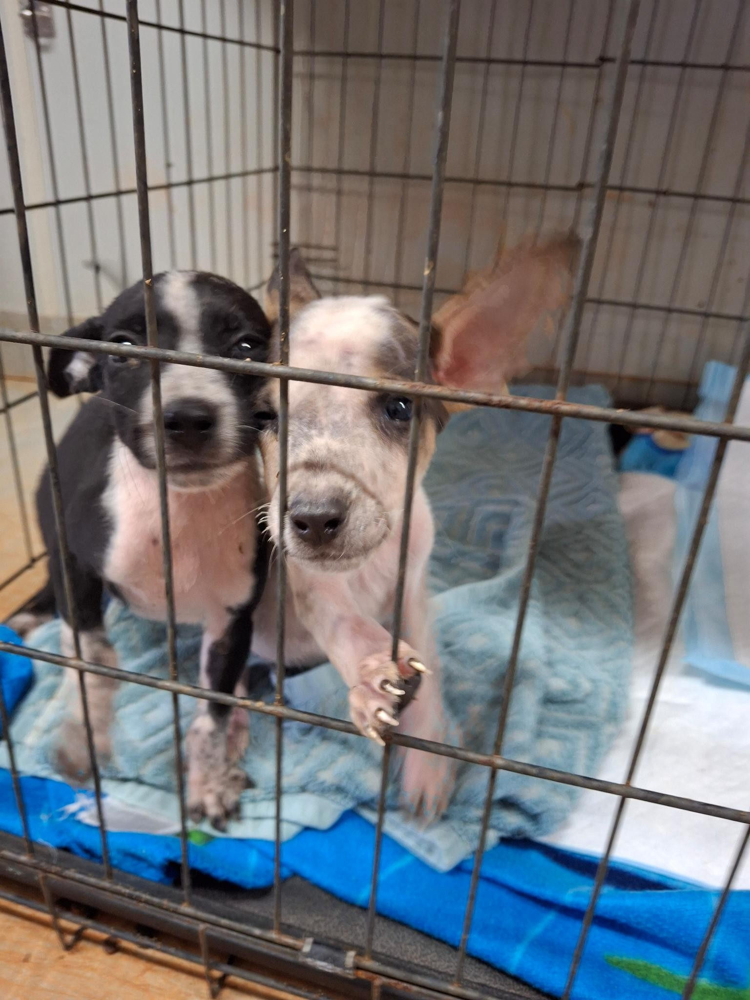

There is nothing our dogs love more than an adventure — getting out of the shelter to spend time with a family in a different environment for some peace and quiet, an exciting trip, or as a trial for possible adoption.

Click the link below to fill in the relevant online form and register, or give our caretakers a call to chat through the right option for you.
Prefer to chat first? Get in touch with our caretakers to find out more.
See the FAQs below to find out more. Click a question to expand the answer.